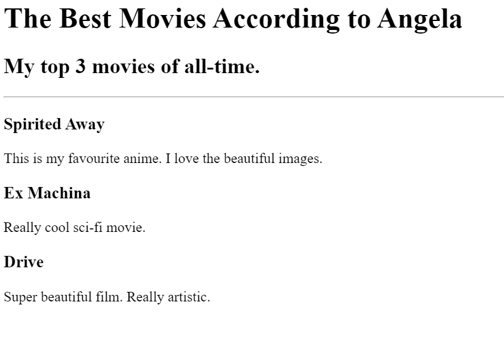

<!-- TODO 1: Create the HTML Boilerplate -->

<!-- TODO 2: Add Your previous projects' HTML into the public folder -->

<!-- TODO 3: Take screenshots of your project previews and add the images to the images folder -->

<!-- TODO 4: Add titles/subtitles etc. -->

<!-- TODO 5: Add a link to the project pages -->

<!-- TODO 6: Add images to show the project previews
HINT for TODO 6: You can use the height attribute set to 200 to make the image smaller:
https://developer.mozilla.org/en-US/docs/Web/HTML/Element/img#attr-height -->

<!-- TODO 7: Add the Contact Me and About Me page links -->

<h1>Mans Portfolio!</h1>

<h2>Esmu WEB developer</h2>

<hr/>

<h2><a href="./public/movie-ranking.html">Movie ranking Project</a></h2>



<h2><a href="./public/birthday-invite.html">Birthday invite project</a></h2>
<a href="./public/birthday-invite.html"><h2>Birthday invite project</h2></a>
 

<hr/>

<a href="./public/about.html" > About Me</a>
<a href="./public/contact.html" > Contact Me</a>

